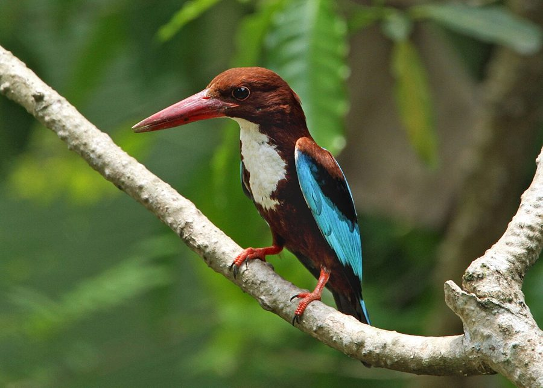

किलकिलाWhite-throated Kingfisher
Halcyon smyrnensis · Alcedinidae · BRD-0031

- Scientific name
- Halcyon smyrnensis (Linnaeus, 1758)
- Family
- Alcedinidae
- Hindi
- किलकिला
- Status here
- native
- IUCN
- LC
When to look कब देखें
Present all year.
किलकिला / White-throated Kingfisher
Halcyon smyrnensis (Linnaeus, 1758) — Alcedinidae
किलकिला (सफ़ेद छाती वाला किलकिला) — पूर्वी उत्तर प्रदेश के खेतों, बागों, सड़कों के किनारे और बिजली के तारों पर पाया जाने वाला सबसे आम और Conspicuous किंगफिशर है। पानी के पास रहने वाले अन्य किंगफिशरों के विपरीत, यह पानी से कोसों दूर सूखी ज़मीन और खेतों में शिकार करना पसंद करता है। इसकी मुख्य पहचान इसका बड़ा चॉकलेटी-भूरा (chestnut-brown) सिर और शरीर, गले और छाती पर बना बड़ा चमकदार सफ़ेद धब्बा (white throat patch) और पीठ तथा पंखों का चमकीला फिरोजी-नीला (brilliant turquoise-blue) रंग है। इसकी चोंच बड़ी, भारी और सुर्ख लाल होती है। यह केवल मछली ही नहीं, बल्कि खेतों के टिड्डों, गिरगिटों, चूहों और छोटे मेंढकों का भी शिकार करता है।
Quick Identification त्वरित पहचान
| Feature | Description |
|---|---|
| Size | Medium-sized kingfisher (27–29 cm total length); stocky build |
| Colouration | Chestnut-brown head, flanks, and lower belly; large, pure white throat and breast patch |
| Wings | Electric blue back and wings, with a bright white wing patch visible in flight |
| Bill | Large, heavy, straight, and deep coral-red bill |
| Legs | Short, weak legs that are coral-red |
| Behaviour | Perches on electric wires, fences, and high branches; makes a loud, laughing scream |
Field tip: Look on roadside power lines. The bright electric-blue back flashing during flight, combined with a loud, laughing screech, separates it from all other local birds.
Morphology आकारिकी
Biometrics (typical measurements in the northern Indian plains):
| Measurement | Range |
|---|---|
| Total length | 270–290 mm |
| Wing (flattened chord) | 115–125 mm |
| Tail | 75–85 mm |
| Tarsus | 14–16 mm |
| Bill (culmen from base) | 55–65 mm |
| Weight | 70–100 g |
Plumage: The head, nape, flanks, shoulders, and lower abdomen are dark chestnut-brown. A prominent, large shield of pure white covers the throat and the center of the breast. The back, rump, tail, and parts of the wings are a brilliant, shimmering turquoise-blue. In flight, the black flight feathers show a broad white band at the base, creating a distinct white wing flash.
Bare parts: The heavy, dagger-like bill is coral-red. The irises are dark brown. The short legs and feet are coral-red.
Vocalisations
White-throated Kingfishers are highly vocal, especially in early mornings.
- Flight / Advertising Call: A loud, piercing, rattling laugh: kili-kili-kili-kili, which descends slightly in pitch and can be heard from a kilometer away.
- Alarm Call: A sharp, metallic chack-chack, uttered when cats or humans get too close to its perch.
Ecological Role पारिस्थितिक भूमिका
Generalist terrestrial predator.
- Terrestrial hunter: Unlike other kingfishers, they are not strictly piscivorous. They scan the ground from high perches and drop down to capture large insects, lizards, and small mice.
- Pest controller: They devour crop-destroying grasshoppers, locusts, and rodents in dry fields.
- Nest excavator: Excavate deep burrows in earth banks for nesting, creating cavities that are later used by other species.
Life Cycle / Phenology जीवन चक्र
- Breeding season: March to July, before the heavy monsoon rains fill up the soil cuts.
- Nesting: They excavate a nest burrow in steep earthen banks of canals, dry wells, or road cuttings.
- Tunnel length: The burrow is a horizontal tunnel 50 cm to 1 meter long, ending in a nesting chamber.
- Clutch size: 4 to 7 round, glossy white eggs.
- Incubation: 18–20 days, shared by both parents.
- Fledging: Chicks are fed a diet of insects, lizards, and small frogs. They fledge and leave the tunnel in 22–25 days.
Host Plants or Prey आहार
Primary food items:
- Insects: Grasshoppers (Oxya spp.), crickets, and large beetles.
- Vertebrates: Garden lizards (Calotes versicolor), house geckos, field mice, and small frogs (such as Fejervarya limnocharis).
- Aquatic prey: Occasional small fish and freshwater crabs.
Predators / Natural Enemies शत्रु
- Raptors: Black Kites and Shikras prey on fledglings.
- Corvids: House Crows (Corvus splendens) raid nests if the entrance burrow is shallow.
- Reptiles: Rat Snakes (Ptyas mucosa) enter burrows to consume eggs and chicks.
Agricultural / Human Relevance कृषि प्रासंगिकता
Natural pest controller. They are highly beneficial in agricultural areas. They actively hunt large grasshoppers and rodents in crop fields, acting as free pest controllers.
They have adapted well to human infrastructure, using fence posts and electric wires as hunting perches, although they are vulnerable to pesticide accumulation from eating poisoned insects.
Expected Locally स्थानीय रूप से अपेक्षित
Not a field record. Written from published accounts for eastern Uttar Pradesh. No confirmed local sighting yet — if you have seen it, that is what the atlas needs.
अभी तक स्थानीय पुष्टि नहीं। यह विवरण प्रकाशित स्रोतों से है, किसी अवलोकन से नहीं।
Extremely common across Basti district. They are seen in high numbers perched on electrical wires along the Basti-Ayodhya highway. They nest in the steep clay banks of local irrigation channels. Unlike the Common Kingfisher which is shy and water-bound, this species is bold and regularly seen in domestic backyards.
Distribution वितरण
Global range: Widespread across the Middle East, Indian Subcontinent, Southern China, and Southeast Asia.
In India: Widespread in plains and low hills throughout the country.
In Uttar Pradesh: Abundant resident across all rural, agricultural, and suburban zones.
In Basti district / eastern UP: Found in high numbers across all farming areas and village orchards.
Research Questions शोध प्रश्न
Anyone can investigate these | कोई भी इन प्रश्नों की जाँच कर सकता है
- What is the proportion of vertebrate prey (lizards, frogs) compared to insects in the diet of Basti's White-throated Kingfishers? — Observe hunting birds from a distance and record prey types.
- Do White-throated Kingfishers prefer concrete fence posts over natural branches as hunting perches? — Conduct perch occupancy surveys along crop edges.
- What is the nesting success of burrows excavated in dry wells vs. those in roadside canals? — Locate and monitor nests.
- How do they defend their territories against Black Drongos sharing the same wires? / एक ही बिजली के तार पर बैठने वाले भुजंगा (ब्लैक ड्रोंगो) के साथ किंगफिशर अपने क्षेत्र की रक्षा कैसे करता है? — Document interspecific territorial displays.
- How does calling frequency change during the hot pre-monsoon summer months? / अत्यधिक गर्म गर्मी के महीनों में इनके बोलने की आवृत्ति में क्या बदलाव आता है? — Record calls at different daily temperatures.
Similar Species मिलती-जुलती प्रजातियाँ
| Species | Key Difference | हिंदी |
|---|---|---|
| Common Kingfisher (Alcedo atthis) | Much smaller (16 cm); blue-green upperparts; orange belly; black bill; strictly hunts fish near water | राम चिरैया — बहुत छोटा आकार और पानी के पास रहना |
| Pied Kingfisher (Ceryle rudis) | Black-and-white speckled pattern; black bill; hovers vertically over water; piscivorous | छोटा किलकिला — काला-सफेद चित्तीदार और पानी के ऊपर होवरिंग |
| Black-capped Kingfisher (Halcyon pileata) | Black cap; purple-blue back; red bill; black shoulders; rare winter visitor near water | ब्लैक-कैप्ड किंगफिशर — सिर पर काली टोपी |
Field rule: Chestnut-brown head and body, large pure white throat patch, brilliant blue back, and a large coral-red bill identify this species.
Taxonomy & Classification वर्गीकरण
Original description. Carl Linnaeus described the White-throated Kingfisher as Alcedo smyrnensis in 1758 in his work Systema Naturae, 10th edition (Vol. 1, p. 115). The type locality was Smyrna (now İzmir), Turkey. The genus name Halcyon was introduced by Swainson in 1821, derived from the Greek alkuon, a mythical bird associated with calm seas. The specific name smyrnensis refers to the type locality in Turkey.
Subspecies. Six subspecies are recognized. The subspecies found in UP is:
| Subspecies | Authority | Range | Notes |
|---|---|---|---|
| H. s. fusca | (Boddaert, 1783) | Western India, Nepal, Sri Lanka, Southeast Asia | UP subspecies; slightly darker chestnut than the nominate form |
Family and order placement. Placed in the order Coraciiformes, family Alcedinidae, subfamily Halcyoninae (tree kingfishers).
Phylogenetic notes. Halcyon smyrnensis is closely related to Halcyon gularis (White-throated Kingfisher of the Philippines), which was recently split.
IUCN status rationale. Listed as Least Concern (LC). The species has a massive range and stable populations, adapting highly to human-dominated agricultural landscapes.
Photo Gallery फोटो गैलरी
References संदर्भ
- Linnaeus, C. (1758). Systema Naturae per regna tria naturae. Editio Decima. Laurentii Salvii, Holmiae, p. 115. [original description]
- Ali, S. & Ripley, S. D. (1999). Handbook of the Birds of India and Pakistan. Vol. 4. Oxford University Press, New Delhi.
- Grimmett, R., Inskipp, C. & Inskipp, T. (2011). Birds of the Indian Subcontinent. 2nd ed. Christopher Helm, London.
- Fry, C. H., Fry, K. & Harris, A. (1992). Kingfishers, Bee-eaters and Rollers. Christopher Helm, London.
- BirdLife International (2024). Halcyon smyrnensis. IUCN Red List of Threatened Species. Ver. 2024.
- GBIF Occurrence Data — Halcyon smyrnensis, Uttar Pradesh (2010–2025).
Source file: species/fauna/birds/white_throated_kingfisher.md